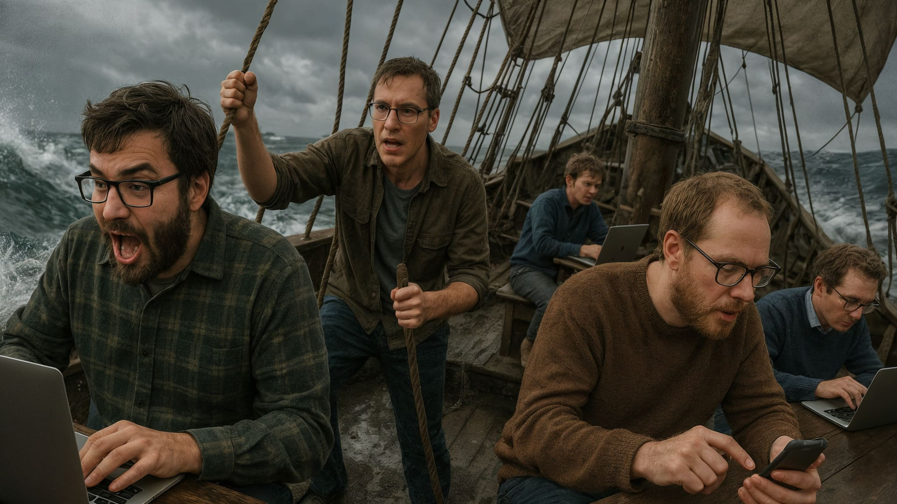
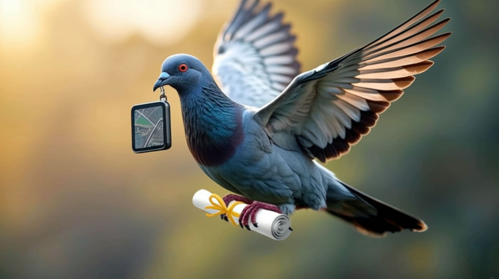
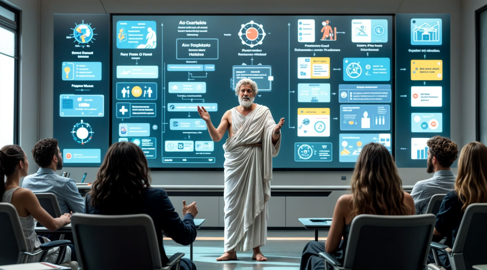

Digiprojects is een verzameling van innovatieve tools en projecten die ik heb ontwikkeld om mijn vaardigheden in AI, coderen en projectbeheer te combineren. Deze projecten zijn niet alleen een manier om mijn technische kennis te vergroten, maar ook om nuttige en praktische oplossingen te bieden voor Digipunt. Tijdens rustige momenten heb ik deze projecten ontwikkeld om Digipunt te ondersteunen of aan te vullen. Elk project is gericht op het verbeteren van onze werking, het bieden van extra ondersteuning, of gewoon het creëren van leuke projecten die gelinkt zijn aan de activiteiten van Digipunt.

Het onboardingproject is ontstaan uit de noodzaak om meer overzicht en duidelijkheid te creëren binnen onze werking. Met een groot aantal Digipunt-locaties en uiteenlopende werkwijzen bleek het lastig om altijd goed op de hoogte te zijn van praktische zaken zoals locatiegegevens, wifi-toegang, procedures, voorzieningen, etc.
Digipunt SharePoint is een project om een centrale hub te creëren voor Digipunt-personeel. Deze hub biedt snel en eenvoudig toegang tot alle belangrijke tools, handleidingen en projecten op één overzichtelijke plek. Met één centrale link kun je direct navigeren naar de benodigde middelen, waardoor werken efficiënter en toegankelijker wordt.
Het Digipunt Charter project is opgezet om een uniforme en duidelijke basis te creëren voor de taken en verantwoordelijkheden binnen onze werking. Na interne discussies werd duidelijk dat er veel interpretaties bestaan over welke vragen en taken tot ons pakket behoren. Dit leidde soms tot misverstanden en verwijten.

Ik heb een handige routeplanner ontwikkeld waarmee je in één oogopslag alle Digipuntlocaties op een interactieve kaart te zien krijgt. De kaart toont de afstand van één locatie tot alle andere, en je kunt eenvoudig de route bepalen tussen twee punten – met de auto, de fiets of te voet. Alsook de vanaf de Gentse Stations.

Met mijn doorverwijzingsproject heb ik een tool ontwikkeld die het proces van doorverwijzen tussen collega's, Digipunten en Stadsdiensten eenvoudiger en efficiënter maakt. Met deze tool maak je snel en eenvoudig doorverwijskaarten waardoor de kans op frustraties en misverstanden vermindert.

Aristotal is een innovatieve web-app die gebruik maakt van AI om technische onderwerpen te vertalen naar begrijpelijke taal. Met één druk op de knop genereert Aristotal eenvoudige lessen, flashcards en quizzen over IT-concepten in de door jou gekozen taal. Complexe informatie wordt toegankelijk zonder vakjargon.
De Custom Commander is een Chrome-extensie die ik heb ontworpen om de dagelijks veelvoorkomende vragen en handelingen snel en uniform in de bezoekersforms in te geven. Dit bespaart tijd en zorgt voor consistentie in de antwoorden die we geven. Bovendien is de uniformiteit handig voor data-analyse.
Sommige bezoekers willen graag zelf hun Itsme installeren of jobbonus aanvragen zonder tussenkomst van een Digihelper. Echter zijn veel sites enkel in NL, Frans & Engels beschikbaar. Ik maak een tool om het aanmaakproces van veel voorkomende vragen in andere talen beschikbaar te maken.
SK-e-dule of Skedule is een module die zorgt voor een volledig eerlijke planning van werkdagen in het Stadskantoor. Het systeem plant medewerkers willekeurig in, terwijl het op jaarbasis garandeert dat iedereen exact evenveel dagen op locatie wordt ingepland en de zwaarste last gelijk wordt verdeeld.
DigiPlanning is een experiment om te zien of ik zelf een complexe planning met meer dan 10 locaties eenvoudiger en efficiënter kan maken. Met DigiPlanning kun je bijvoorbeeld van tevoren onbeschikbare datums inplannen en zorgt één wijziging ervoor dat deze direct voor iedereen wordt doorgevoerd.
DigiGenie is jouw IT-assistent voor al je digitale vragen en problemen. Je kunt snel en gericht je vraag stellen door de keuzeopties voor besturingssysteem en apparaat te gebruiken. DigiGenie geeft eenvoudig probleemoplossende antwoorden met een stappenplan.
WhatsUpDoc is een hulpmiddel om documenten te begrijpen. Upload een document en stel er vragen over, of vraag om een eenvoudige uitleg van de inhoud. WhatsUpDoc helpt je snel en duidelijk de informatie te vinden die je nodig hebt.
DigiQR vervangt de standaard QR-codes in de Digipunten door scanbare afbeeldingen die niet alleen functioneel zijn, maar ook de identiteit van elke locatie visueel weerspiegelen. Elke code is uniek en past bij de sfeer en het karakter van de specifieke locatie.
Met "POP!" laat ik zien hoe je met moderne AI-technologie zelf hoogwaardige promotiefilms kunt maken. Door diverse creatieve tools te combineren, is het mogelijk om unieke video's te creëren met 3D-personages en opvallende effecten.
Digidefender is een ludiek spel dat ik heb ontwikkeld om spelenderwijs programmeervaardigheden te leren. In het spel moet je inkomende klachten afweren van onze partners en oversten. Het combineert een leuke manier om programmeerskills te leren en mensen aan het lachen te brengen.

Het Wheel of Misfortune is een zelfgecodeerde, speelse tool die ik heb ontwikkeld om op een onpartijdige manier te bepalen wie een minder populaire taak of locatie moet bemannen. Onze digipuntmedewerkers zijn al standaard voorgeprogrammeerd, zodat er met slechts enkele klikken een antwoord beschikbaar is.
Om onze vaardigheden in klantvriendelijkheid te verbeteren, heb ik een virtuele chatbot ontwikkeld die de rol van een lastige klant speelt. Deze chatbot is speciaal ontworpen om de werking van Digipunt te begrijpen, inclusief wat onze job inhoudt en wat er van ons wordt verwacht. Opgelet: deze bezoeker zal nooit tevreden zijn!
Ik maak podcasts met virtuele hosts die promotie maken voor Digipunt of digitale topics in eenvoudige taal bespreken. Deze podcasts zijn ontworpen om informatie toegankelijk te maken en luisteraars te betrekken bij de digitale wereld. Ze bieden een leuke en informatieve manier om meer te leren over digitale onderwerpen.

{kind=link}
{kind=link}
{kind=link}
{kind=link}
{kind=link}
{kind=link}
{kind=link}
{kind=link}
{kind=link}
{kind=link}
{kind=link}
{kind=link}
{kind=link}
{kind=link}
{kind=link}
{kind=link}